Builders build. Admins set the terms.
- Spaces: the admin creates one for each department and adds its builders.
- Policies: every space has one. A new space starts on the default governance policy until the admin gives it one of its own.
- Access: builders in a space get the models, API keys and budget its policy contains, and work within its rules.
- Requests: when building or deploying needs more, a builder asks and the admin decides.
Learned the platform, then designed its controls
- I designed the console end to end: research, structure, production UI, states and design QA.
- The problems came from the solutions and support teams already fielding them, and from the customers they worked with. I didn’t run separate admin interviews.
- ZBrain was still building what the console had to govern, so I read each part as it went in: governance and its compliance frameworks (GDPR, HIPAA and SOC 2 among them), connectors (how Teams, Drive, Sheets and Slack bring a department’s data in) and deployment (what’s checked before a release and what removal cleans up). I designed the controls against what the system actually did.
- Kapil, Design Head, gave direction and critique, Vivek designed the builder side, and the engineers built what the console governs. The move from agent to space came out of that work.
Builders decide what an agent does. The console decides what it’s allowed to do.
Agents act with nobody watching, and customers wanted control. Those running agents in production could describe exactly what they couldn’t see or control. And organisations run budget, data and risk by department, so each department needed its own terms: what its builders can use, what they can spend and what their agents are allowed to do.
An admin’s change reaches a whole department, so every change has to be safe to make.
Four rules the screens are built on
Every screen in the console follows from them.
Policy on the space, not the agent
One policy per department, inherited by every agent and solution built in it. I gave up per-agent settings so one change reaches the whole department.
Rules act in levels
Warn, throttle, escalate or deny, so a false alarm doesn’t get a rule switched off.
A limit is a request
Builders ask, and one approval applies it to the whole space.
Exceptions expire
Each one is scoped to a space or solution, with an end or review date, so a one-off never quietly becomes the policy.
The opportunity was to make policy inherited and every exception temporary.
Structured around admin responsibilities, not system objects
The menu follows what an admin comes to the console to do: see what’s happening, decide who gets in, give builders the models, connections and API keys they need, set the rules and check what ran against them, and look after the account. Each of those jobs became one group, with its pages inside.
Overview
- Observatory
- Spaces
Access
- Users
Resources
- Models
- Connections
- API Keys
Governance
- Policies
- Requests
- Agent log
- Usage log
- Deployments
- Audit & Activity
Account
- Billing
- My Account
One policy governs the whole space
A space’s policy decides what its builders get (models, API keys and budget) and the rules and compliance their work has to meet, from the first build to the release and the agents that run after it. Every action then goes one of three ways.
Where the work runs
The space’s policy
How it ends
- Build solutionsWith the models, data and connections the policy allows.
- Deploy releasesTo a cloud target, after its checks.
- Run agentsAnd their API keys, in the app and outside it.
- Models and API keysWhat the space’s builders can use
- BudgetCredit limits per period and key
- Rules and complianceConditions, actions and frameworks like GDPR
- AllowedWithin the policy, the action goes ahead.
- Against a ruleWarnThrottleEscalateDenyLogged with the rule that caught it.
- Needs moreRequest→ApprovedThen it applies to the whole space, so the next builder doesn’t have to ask.
No space starts without one: a new space runs on the default governance policy until the admin gives it one of its own.
Three early decisions I reversed
Each one fit how the platform was built, not how admins work: policy set agent by agent, rules that could only allow or block, and a rule builder only experts could use. Each was rebuilt around the admin.
A policy per agent
Each agent carried its own rules, models and budget, because that is how the platform was built. Every new agent meant setting it all up again.
A policy per space
One policy per department, inherited by every agent and solution built in it, with a default so that no space starts without one.
Allow or block
A matching rule could only let the action through or stop it. Follow a false block, though, and someone switches the rule off to get work moving. The rule stays in the list, doing nothing.
Four levels
Agents act with nobody watching, so the rule has to handle the borderline case itself. Each rule now acts as hard as the case needs: warn, throttle, escalate or deny.
One builder, written for experts
Four steps, from the rule’s name through condition and enforcement to scope. It suited admins who already knew a regex from a data class. For everyone else the barrier was the vocabulary, not the number of steps, so cutting steps wouldn’t have helped, and simplifying the builder would have capped what an expert could write.
Two ways in, one rule
Guided setup takes a plain-language description and asks for the three choices the builder would: what to match, how hard to enforce, and where it applies. It answers with the rule it wrote, its condition and action in view, to tune later from the policy. The manual builder stays for admins who know what they want.
A day in the console
Five steps from one admin’s day, from the first signal to a release record.
See what needs attention
The Observatory opens on what an admin may need to act on: cost, runs, agents at risk and policy violations, with governance events arriving as they happen. An agent in warning can be stopped right from the table, and stopping suspends it rather than deleting it.
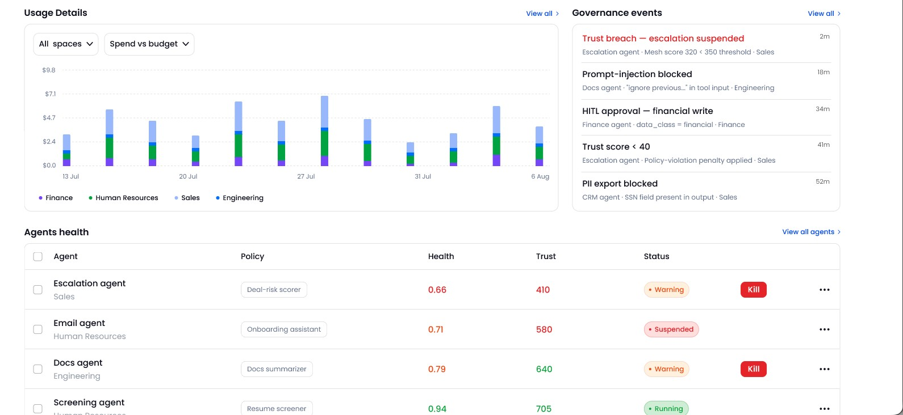
Set up a space for each department
Each department gets its own space in two steps: name it and choose its policy, then add its builders. A new space starts on the default policy, never a blank one, because a blank policy hands the hardest decision to whoever happens to be setting up the space. The form shows what that policy grants before anything is saved.
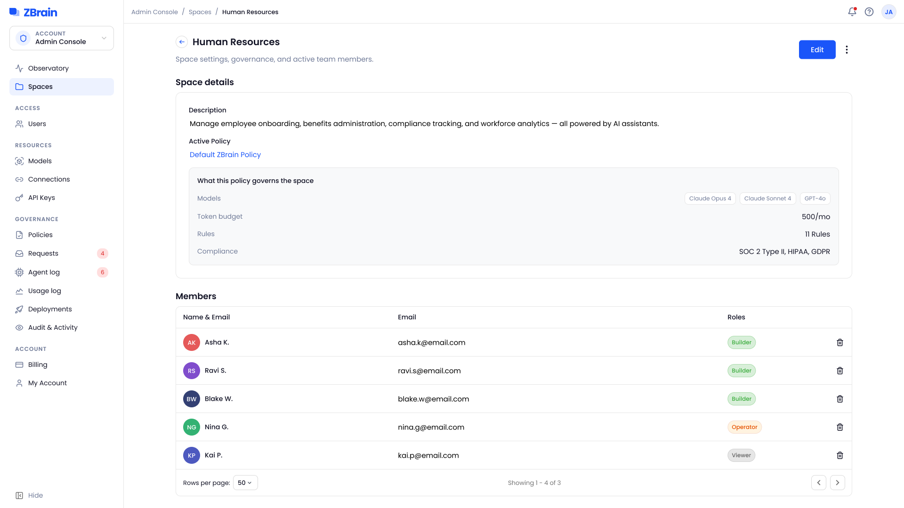
Define the policy
Rules, models, budget, compliance and exceptions each have their own page, so the person setting a rate limit never has to touch SOC 2. Rules inherited from the base are locked, and frameworks like HIPAA are switched on, not written by hand.
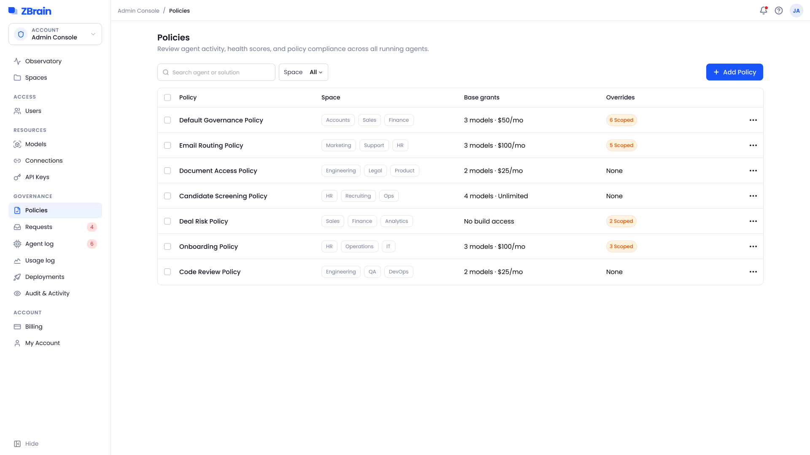
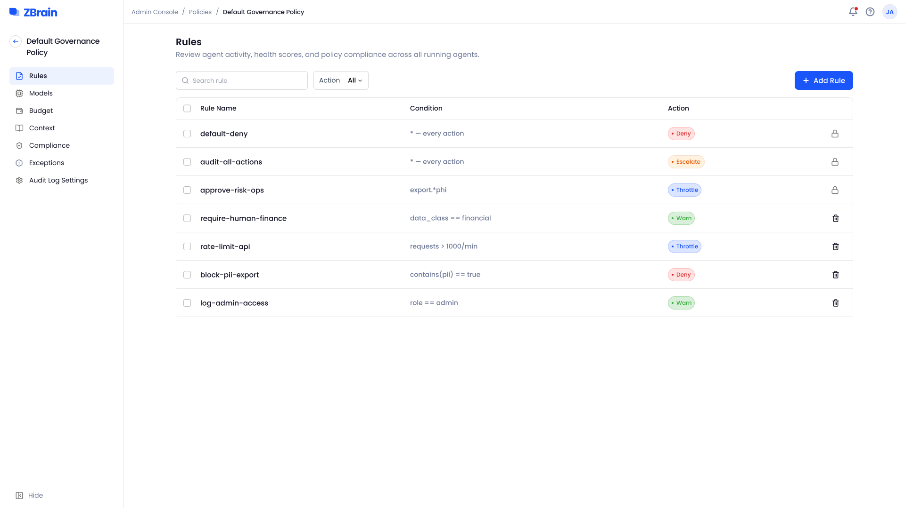
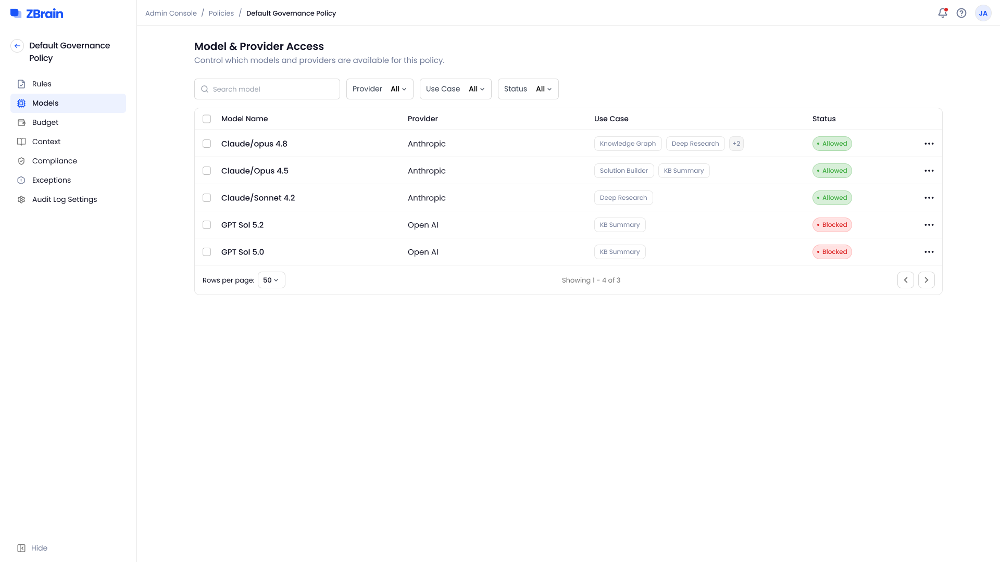
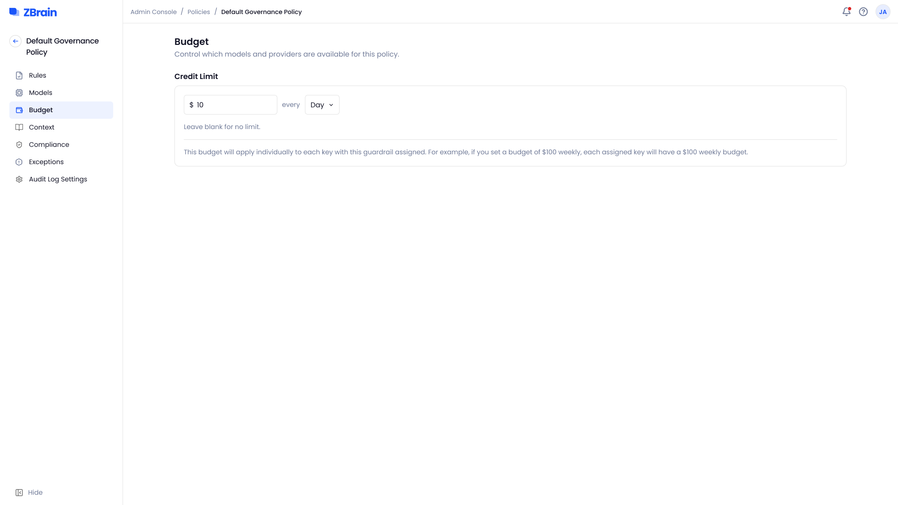
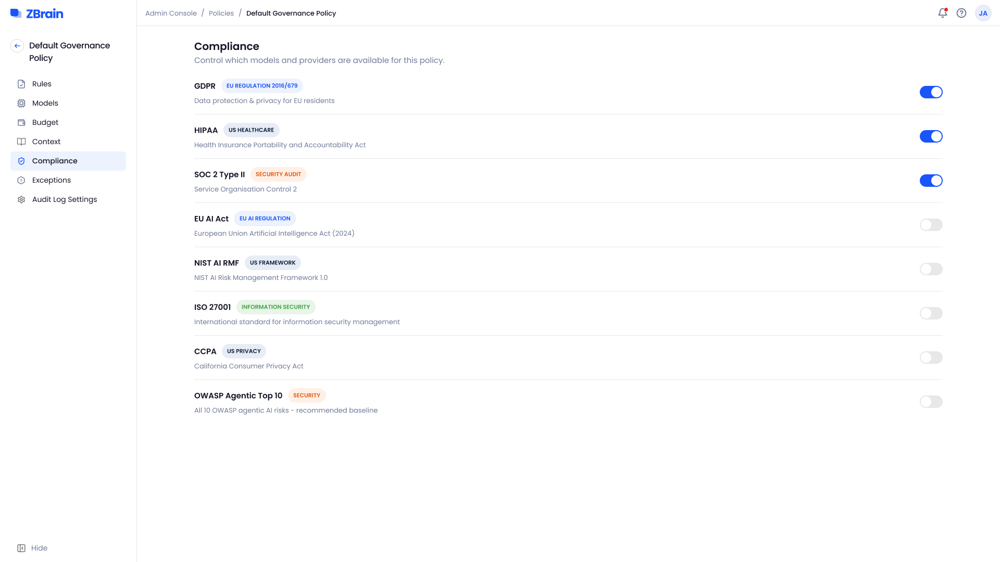
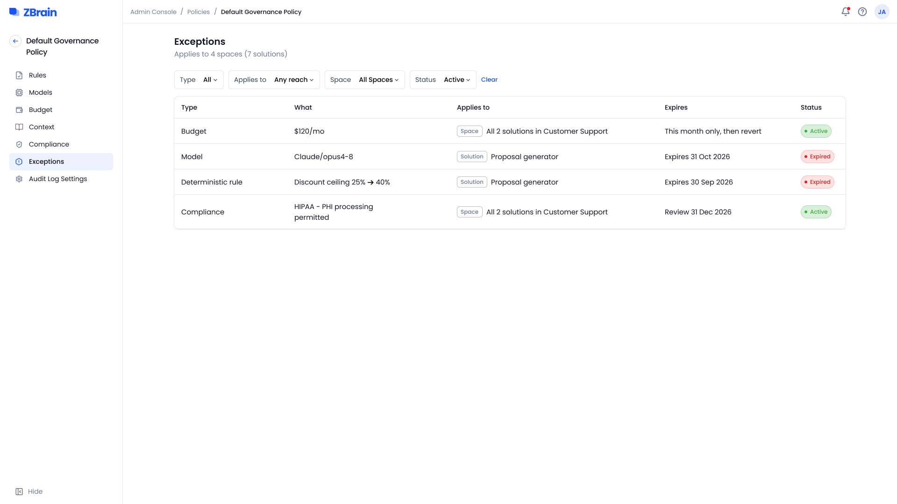
Answer builder requests
When a builder needs something the policy doesn’t give them, such as a model, a connection, API access or more budget, they ask. One approval covers the whole space, so the next builder doesn’t have to ask again, and every decision stays in the history.
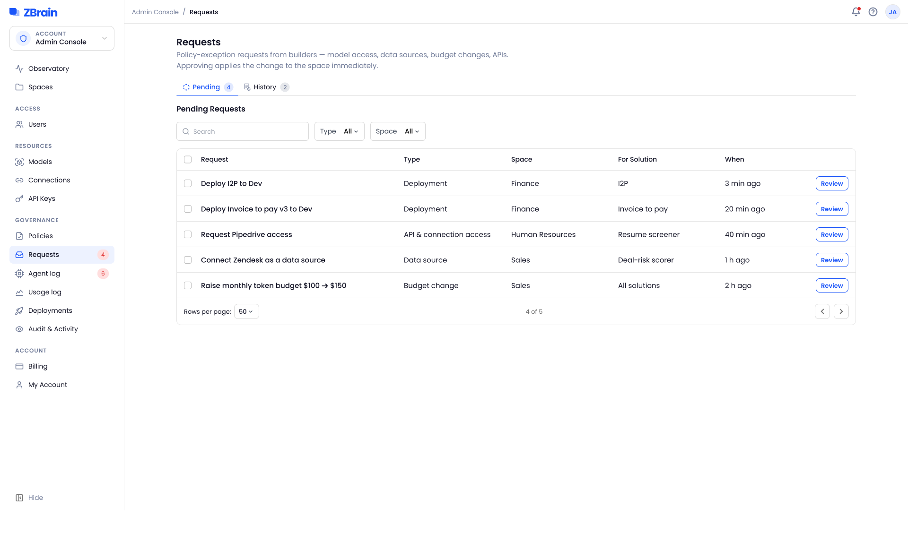
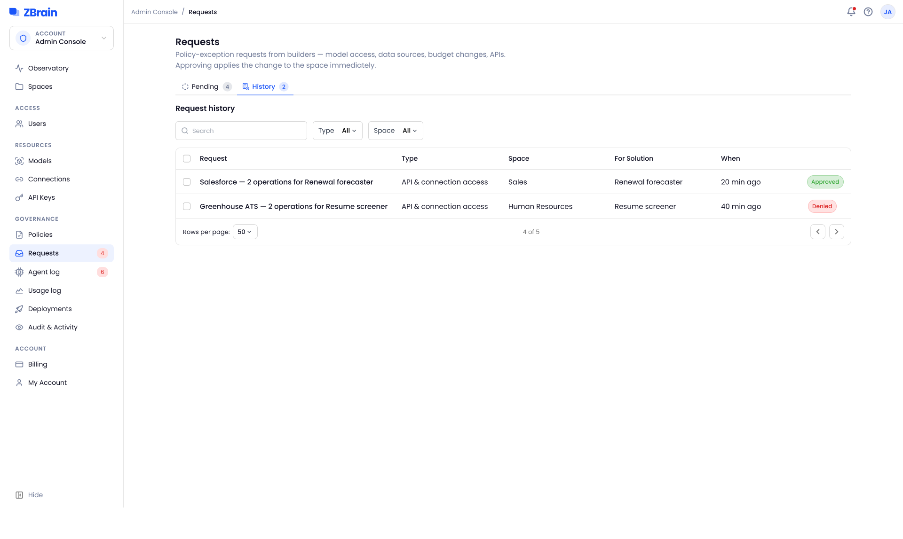
Trace what happened, and what shipped
The record has to make sense weeks later to someone who wasn’t there. Every blocked call names the rule that stopped it, usage shows where the money went by space, model and provider, and every release records its version, space, cloud target and approver. A target that fails its checks can’t take releases, and the console says why.
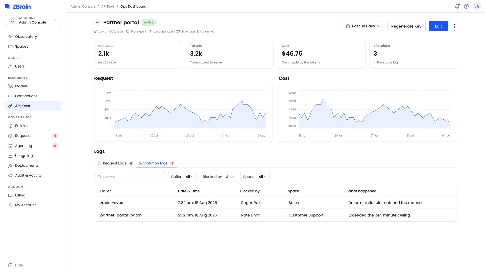
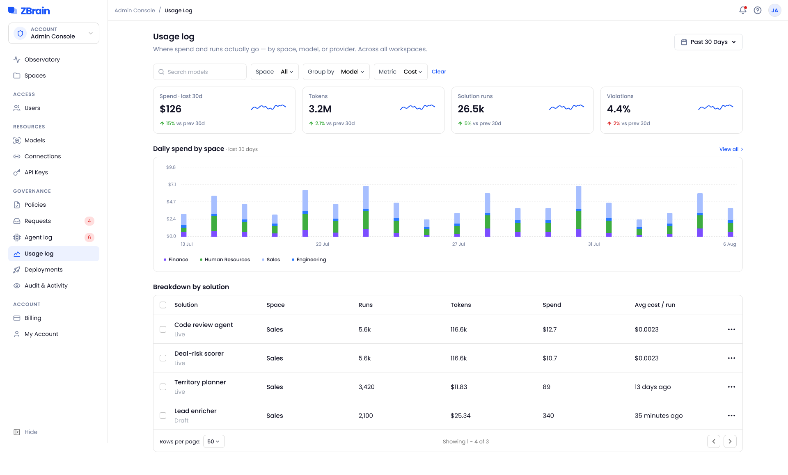
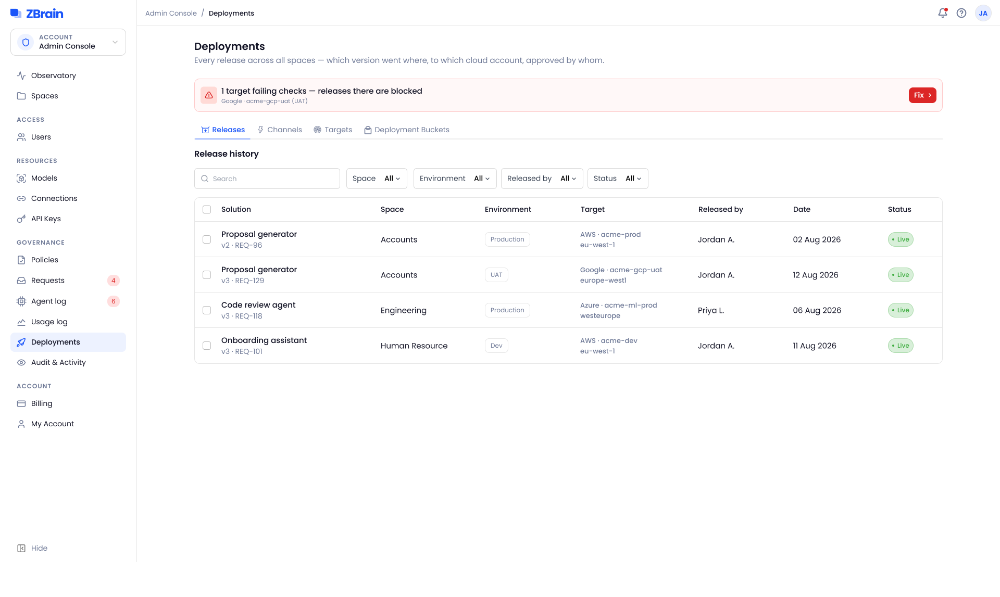
The states around the screens
Irreversible takes more than a click: deleting a user is typed, a key says what will break before it’s regenerated, and a deletion shows its progress, then what it removed. Edits open beside the list, not on top of it.
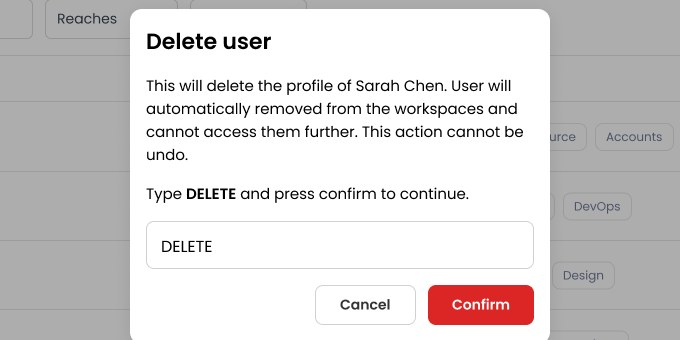
Typed, not clicked
The admin types DELETE to confirm.
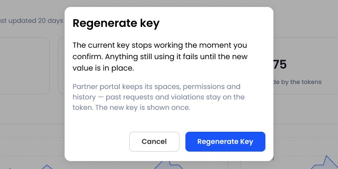
Says what will break
The current key stops working immediately, and the dialog says so first.
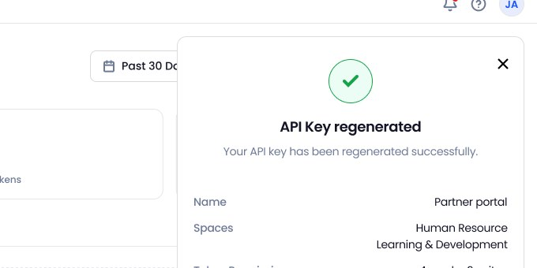
Arrives with the code to use it
The new key comes with its SDK code and a document to download.
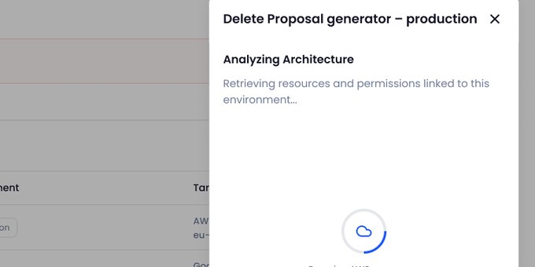
Progress, shown
The architecture is analysed before any resource is removed, and the panel shows it.
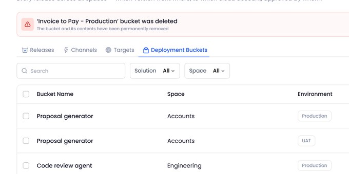
Says what was removed
A banner confirms the bucket was deleted, above the ones that remain.
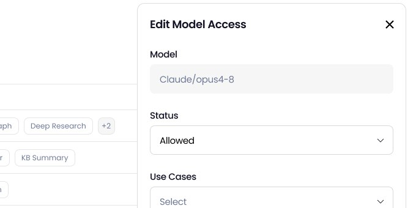
Beside the list, not on top of it
Model access opens in a side panel, with the list still in view.
Held to the build
I review each build against the designs and raise visual and functional issues for engineering. One pass on spaces and users raised 13 subtasks.
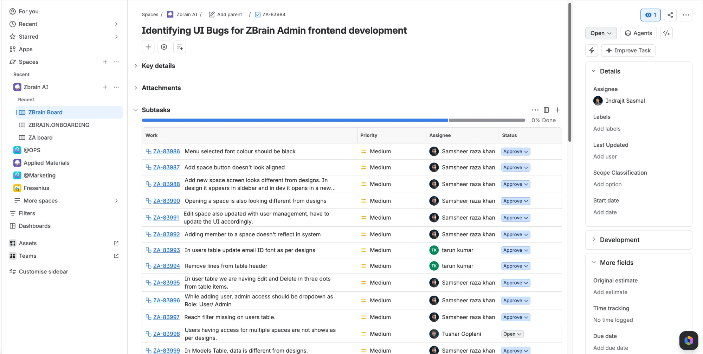
Live with customers
The console is live on ZBrain, and the enterprises on the platform govern their agents through it.